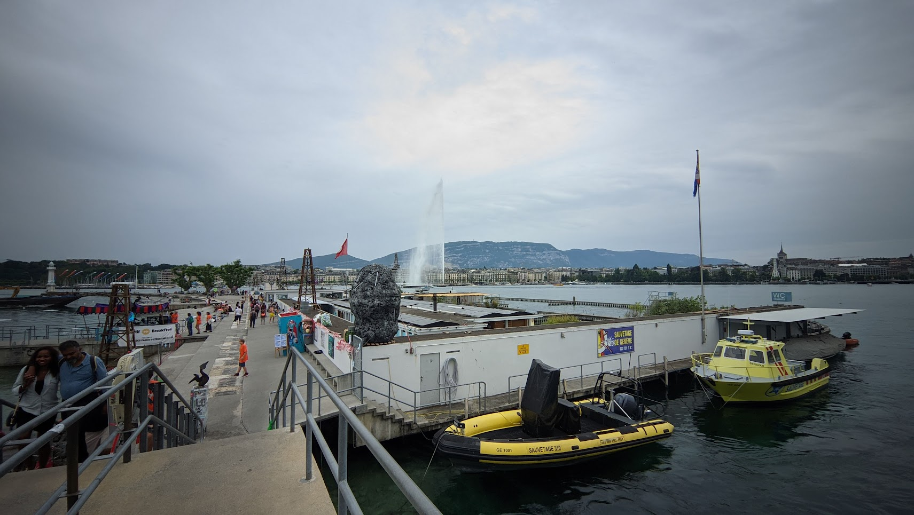

Praag
Praag is altijd al een bestemming geweest waar ik naar uitkeek. Dit verlangen werd hoofdzakelijk ingegeven door de befaamde astronomische klok, het feit dat Praag een prominente rol speelt in de film "Spider-Man: Far From Home" (ik ben een fervent Spider-Man-fan), en niet te vergeten, de vele enthousiaste verhalen van vrienden en familieleden over hun ervaringen in deze stad. Bovendien prikkelde de aanwezigheid van Karlovy Lazne, Europa's grootste nachtclub, mijn nieuwsgierigheid.

Wenen
Onze volgende bestemming was Wenen, een stad waar we aanvankelijk niet al te hoge verwachtingen van hadden. Daarom hadden we gezamenlijk besloten hier slechts één nacht te verblijven in plaats van twee, om zo tijd en geld te besparen voor andere steden. Achteraf betreurden we deze keuze, want Wenen heeft ons werkelijk verbluft. Wat een prachtige stad is het! We kwamen 's avonds aan, en nadat we onze bagage in ons hostel hadden achtergelaten, begaven we ons op verkenningstocht.
Boedapest
Budapest, waar zal ik beginnen... Al geruime tijd stond deze stad op mijn verlanglijst vanwege haar rijke geschiedenis en indrukwekkende stadsplanning en architectuur. Ook hier ademde alles een Romeinse sfeer. Tijdens onze eerste dag hebben we aanzienlijke afstanden afgelegd. Onze eerste aanblik was het overheidsgebouw, het grootste en meest imposante gebouw dat ik ooit heb gezien. Woorden schieten tekort om de overweldigende omvang van dit gebouw te beschrijven.

Ljubljana
Ljubljana fungeerde opnieuw als een tussenstopstad voor ons. Gelukkig hadden we dit keer geen vertraging, waardoor we de gelegenheid hadden om enkele interessante bezienswaardigheden in deze charmante stad te verkennen. Zoals vaak het geval is in dit soort steden, bevindt Ljubljana zich eveneens op een heuvel. Boven op deze heuvel staat het kasteel van Ljubljana,

Venetië
Venetië behoort tot een van de meest unieke steden die ik ooit heb bezocht. Dit komt natuurlijk door het feit dat het een autovrije stad is, bestaande uit verschillende eilandjes. Alles verloopt via het water; de politie, brandweer, ambulance en het openbaar vervoer, alles gaat over de kanalen. In Venetië tref je de smalste straatjes en knusse pleintjes aan. Omdat Venetië niet zo uitgestrekt is, is er niet bijzonder veel te doen.
Nice
We bezochten Nice voornamelijk als vertrekpunt voor onze treinreis naar Monaco. In Nice hebben we ontbeten, een korte wandeling gemaakt en foto's genomen. We kwamen daar ook de Notre Dam tegen, wat gek klinkt maar het was een kleinere versie van de echte Notre-dam wat vrij bizar was om te zien. Vervolgens zijn we vrij snel naar het treinstation gegaan om naar Monaco te reizen.

Monaco
Monaco behoort, net als Venetië, tot een van de meest bijzondere steden die ik ooit heb bezocht, doordrenkt van luxe. Het voelt als een waar paradijs, niet alleen vanwege de pracht en praal en het wereldberoemde Monte Carlo Casino, maar ook vanwege het schitterende landschap met de majestueuze berg en het kristalheldere water in de baai. Er leek geen einde te komen aan de parade van luxe auto's en superjachten.

Genève
Ik had, afgezien van het prachtige omringende landschap, niet veel verwacht van de stad zelf. Maar ik had het mis. Genève, net als Boedapest en Wenen, is een stad doordrenkt van Romeinse invloeden en architectuur, en de Romeinse bouwstijl lijkt hier nooit op te houden. De stad ligt in de bergen en omvat tevens een enorm, kristalhelder meer. Hier kon ik heerlijk ontspannen bij een gratis zwemplek, compleet met kleedhokjes.

Parijs
Parijs was onze laatste overnachtingsbestemming. Ik was er het jaar ervoor al geweest, maar had toen maar weinig kunnen zien vanwege de beperkte tijd. Nu hadden we ruim de tijd om alles te verkennen wat we wilden, zoals de Sacre Coeur, de Eiffeltoren, de Arc de Triomphe en het Louvre, om er maar een paar te noemen.
Van alle bezienswaardigheden die we in die twee dagen hebben bezocht,